Dokumentasi sistem & serah terima
Dokumentasi teknis dan panduan penggunaan sistem virtual tour 360° kawasan Pura Batuan Kaler.
Informasi dokumen
Dokumen ini menjelaskan cara menggunakan, mengelola, merawat, dan menyerahkan sistem Pura Batuan Kaler 360. Isi dokumen disusun untuk dua kelompok pembaca: pengelola konten di Desa dan operator teknis yang menjaga server, database, serta backup.
| Versi | Tanggal | Perubahan |
|---|---|---|
| 1.0 | 17 November 2026 | Dokumentasi awal lengkap: panduan pengunjung, admin, teknis, deployment, backup, dan serah terima. |
Navigasi dokumen
Bagian 01
Pura Batuan Kaler 360 adalah dokumentasi digital kawasan pura dalam bentuk virtual tour 360°. Sistem memiliki situs publik untuk pengunjung dan panel admin untuk pengelola.
| Antarmuka | Alamat | Fungsi |
|---|---|---|
| Situs publik | /id dan /en |
Beranda, virtual tour, area, sejarah, galeri, panduan kunjungan, peta lokasi, dan pemilihan bahasa. |
| Panel admin | /admin/login |
Login, dashboard, media panorama, scene, hotspot, area, galeri, halaman, informasi kunjungan, pengaturan akun, storage, dan backup. |
| Fitur | Keterangan |
|---|---|
| Virtual tour multi-scene | Panorama 360° dengan kontrol drag, zoom, reset, dan fullscreen. |
| Hotspot navigasi | Berpindah dari satu scene ke scene tujuan. |
| Hotspot informasi | Membuka panel berisi judul dan deskripsi area/objek. |
| Daftar scene dan mini-map | Navigasi alternatif melalui daftar dan peta alur hubungan scene. |
| Area dan detail area | Daftar area serta scene yang dipublikasikan pada area tersebut. |
| Galeri | Foto dokumentasi yang diunggah dan dikelola dari admin. |
| Sejarah dan panduan | Halaman artikel yang dapat diedit melalui CMS. |
| Peta lokasi | Embed Google Maps dan tautan petunjuk arah pada beranda/panduan. |
| ID/EN | Konten terjemahan per locale dengan fallback pada konten tertentu. |
| Draft/published | Konten dapat disimpan sebagai draf sebelum tayang. |
| Backup | Unduh database dari admin dan backup penuh melalui skrip server. |
| Istilah | Arti dalam sistem |
|---|---|
| Scene | Satu titik panorama 360° yang dapat dibuka pengunjung. |
| Hotspot | Titik interaktif pada panorama untuk navigasi atau informasi. |
| Yaw | Arah horizontal pandangan, disimpan dalam radian. |
| Pitch | Arah vertikal pandangan, disimpan dalam radian. |
| FOV | Field of view; lebar pandangan kamera. |
| Equirectangular | Proyeksi panorama 360° dengan rasio 2:1. |
| Draft | Konten tersimpan tetapi tidak tampil di situs publik. |
| Published/Tayang | Konten dapat diakses pengunjung publik. |
| Fallback | Terjemahan Inggris kosong diganti versi Indonesia. |
| Aset panorama | Metadata file panorama, thumbnail, dan konfigurasi tampilan. |
Bagian 02
Pisahkan peran konten dan peran teknis. Pemisahan ini penting agar serah terima tidak bergantung pada satu orang pengembang.
| Peran | Tanggung jawab |
|---|---|
| Pengunjung | Membuka situs publik, melihat tour, area, sejarah, galeri, dan panduan. |
| Admin Desa | Mengelola media, scene, hotspot, area, galeri, halaman, informasi kunjungan, akun, dan backup database. |
| Operator teknis | Menjaga VPS/hosting, domain, DNS, SSL, database, volume upload, migrasi, backup, restore, dan pembaruan keamanan. |
https://domain-desa/id dan /en.https://domain-desa/admin/login./admin/** diperiksa sesinya di server.Urutan ini juga ditampilkan sebagai bar “Alur konten” di bagian atas panel admin. Mengikuti urutan tersebut mengurangi kesalahan referensi dan hotspot tanpa tujuan.
processed.Bagian 03
Bagian ini menjelaskan pengalaman situs publik. Dapat digunakan sebagai materi pendampingan atau teks bantuan untuk pengunjung.
Beranda menampilkan identitas Pura Batuan Kaler 360, hero image, ringkasan pengenalan, informasi kunjungan, pratinjau virtual tour, sejarah singkat, area pilihan, galeri, dan panduan. Gunakan tombol Jelajahi Virtual Tour untuk masuk ke tour.
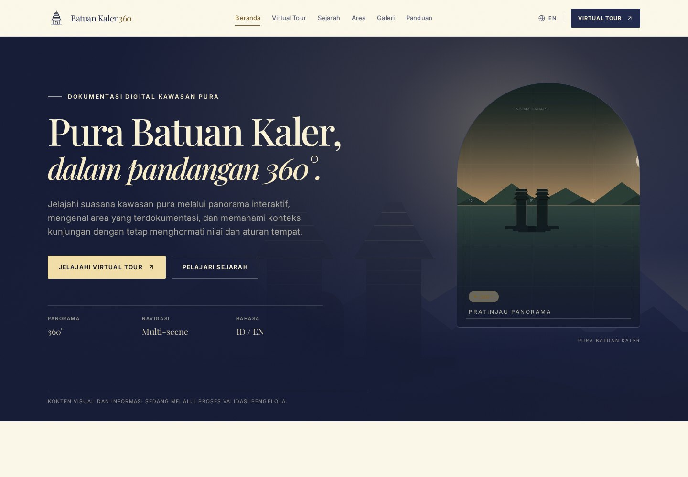
Halaman tour menampilkan panorama 360° di sisi kiri dan panel informasi di sisi kanan. Pengunjung dapat:
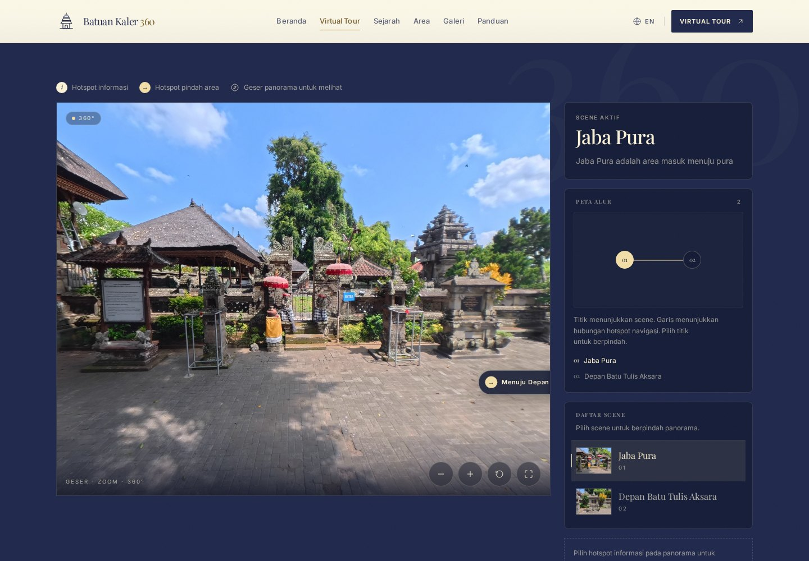
| Aksi | Cara |
|---|---|
| Melihat sekeliling | Drag mouse atau geser dengan sentuhan. |
| Zoom | Tombol + / −, atau gesture zoom pada perangkat sentuh. |
| Reset pandangan | Tombol reset. |
| Fullscreen | Tombol layar penuh; tekan Escape untuk keluar. |
| Keyboard | Tombol panah untuk melihat; + / − untuk zoom. |
Hotspot informasi ditandai dengan ikon i. Klik/tap untuk membuka panel informasi. Panel dapat ditutup dengan tombol tutup.
Mini-map menampilkan titik scene dan garis hubungan navigasi. Warna emas menandai scene aktif. Klik titik atau item legenda untuk berpindah scene. Daftar scene di bawahnya menampilkan thumbnail dan judul.
Halaman Area menampilkan daftar area yang sudah tayang. Setiap area memiliki halaman detail berisi deskripsi dan scene yang dapat dibuka.
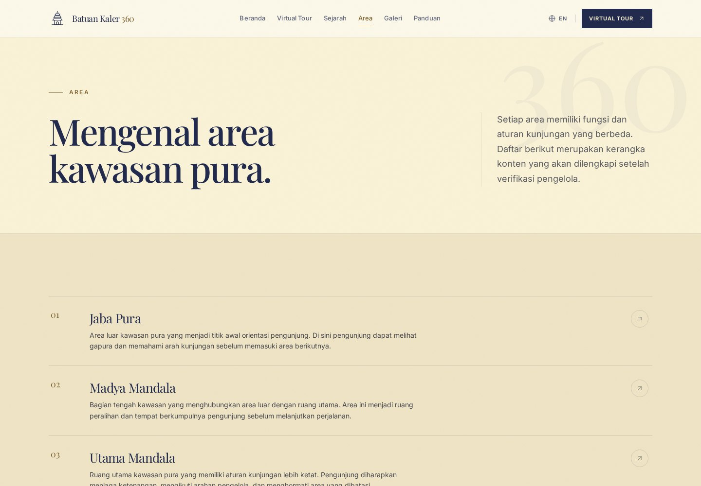
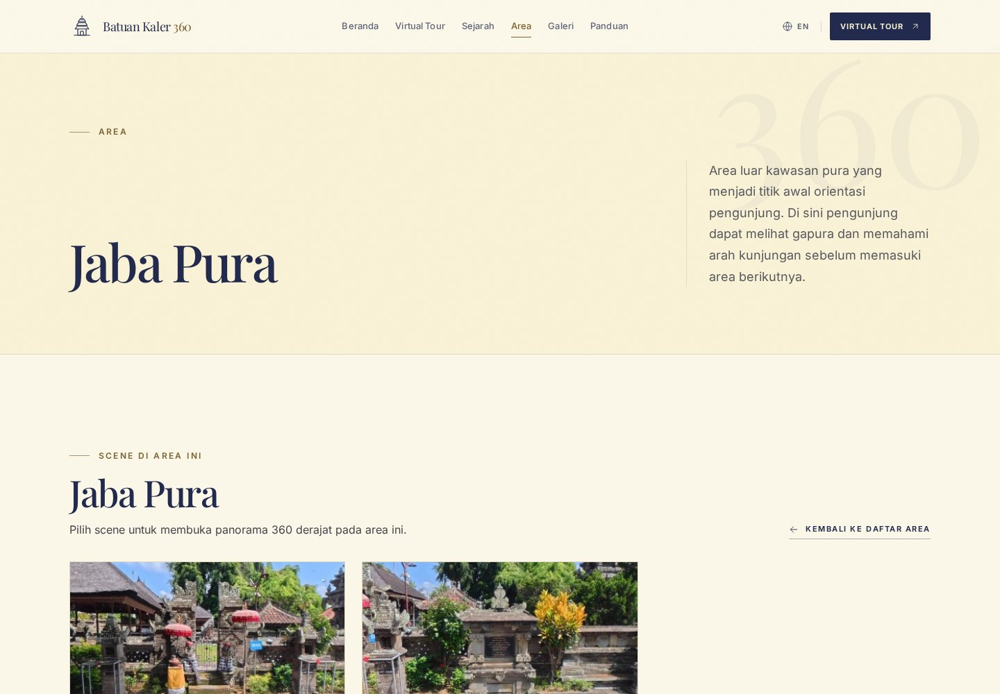
Halaman Sejarah memuat artikel dan blok konten yang dikelola dari admin. Jika terjemahan Inggris belum lengkap, versi Inggris dapat menampilkan sebagian konten Indonesia dengan indikator fallback.
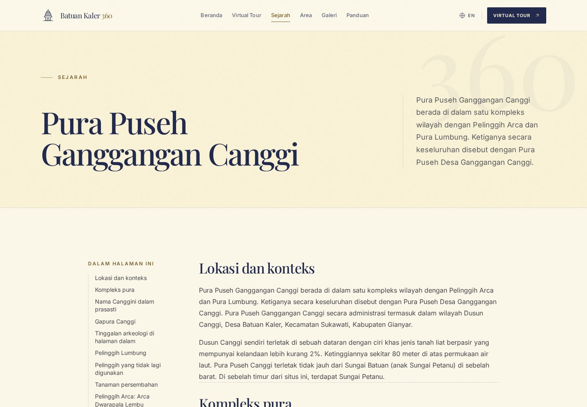
Galeri menampilkan foto published dari admin. Klik foto untuk membuka file ukuran penuh di tab baru. Jika belum ada foto final, halaman menampilkan placeholder.
Halaman Panduan memuat informasi praktis, artikel panduan, serta peta lokasi kawasan pura. Gunakan tombol Buka di Google Maps atau Petunjuk arah untuk navigasi.
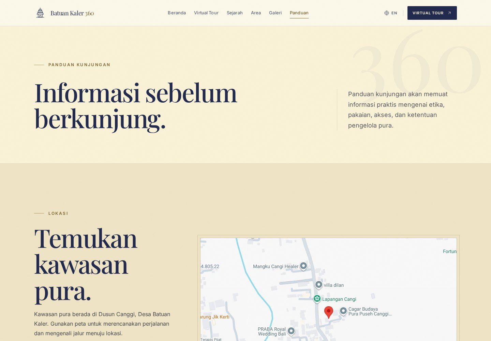
Tombol bahasa di header mengganti antara ID dan EN. Untuk scene dan hotspot, kedua terjemahan wajib ada sebelum tampil. Untuk area, galeri, dan halaman, terjemahan Inggris yang kosong akan memakai versi Indonesia dengan indikator fallback.
Bagian 04
Panel admin digunakan untuk mengelola seluruh konten. Hanya akun administrator yang dibuat melalui provisioning yang dapat masuk.
/admin/login pada domain situs.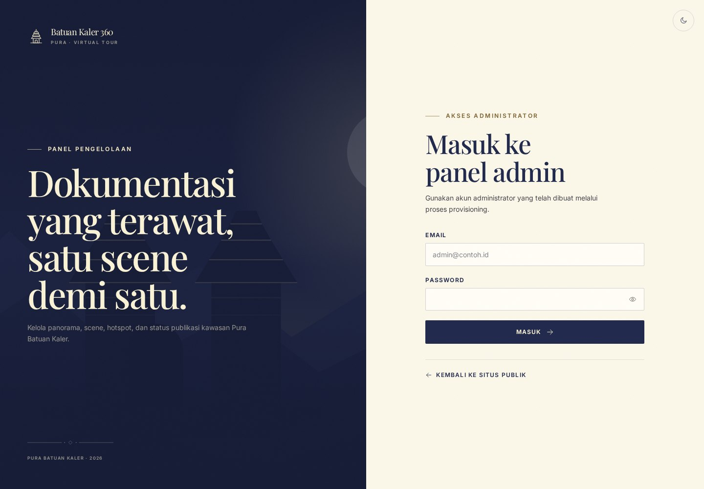
Dashboard menampilkan:
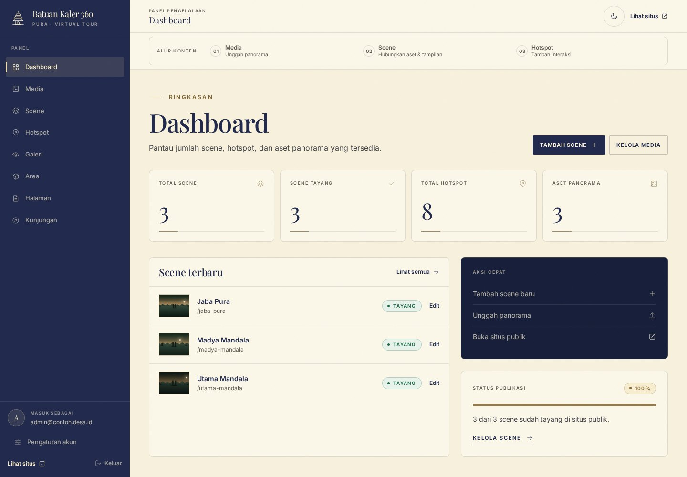
Urutan menu admin: Dashboard, Media, Scene, Hotspot, Galeri, Area, Halaman, Kunjungan, dan Pengaturan akun di bagian bawah. Di desktop, sidebar tetap setinggi layar dan menu dapat scroll sendiri. Di mobile, sidebar tersembunyi dan dibuka melalui tombol menu di kiri atas.
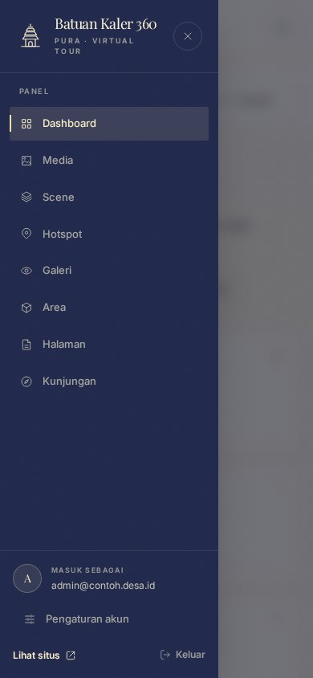
Tombol tema di kanan atas mengganti mode terang/gelap. Pilihan disimpan di browser. Untuk keluar, gunakan tombol Keluar di bagian bawah sidebar.
Bar Alur konten di bagian atas halaman mengingatkan urutan Media → Scene → Hotspot. Langkah aktif ditandai warna emas.
Bagian 05
Media panorama adalah sumber gambar untuk scene. Upload aset terlebih dahulu sebelum membuat scene.
| Berkas | Ketentuan |
|---|---|
| Panorama asli | JPG/PNG/WebP, proyeksi equirectangular, rasio 2:1, lebar minimal 2000 px, maksimal 50 MB. |
| Thumbnail | JPG/PNG/WebP, disarankan rasio 2:1 (mis. 480×240 atau 800×400), maksimal 5 MB. |
| Preview | Opsional, JPG/PNG/WebP, maksimal 10 MB. |
| Galeri | JPG/PNG/WebP, maksimal 10 MB; bukan panorama 2:1. |
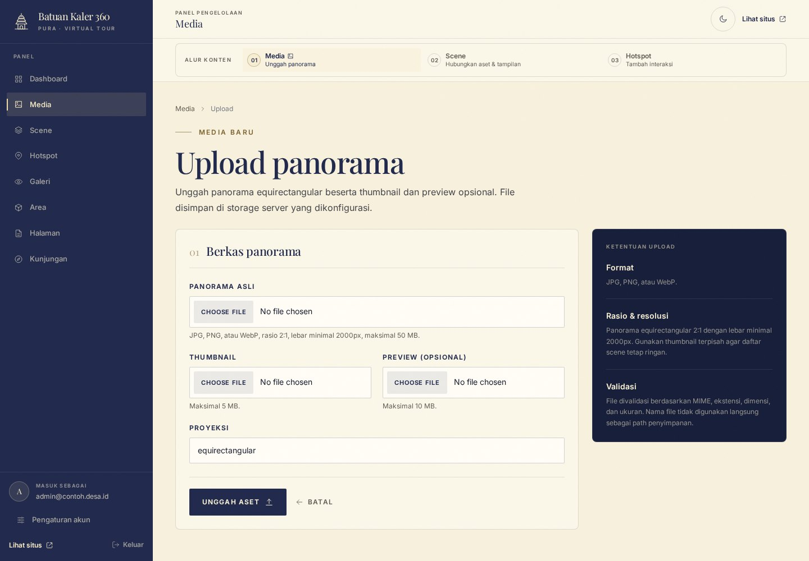
Halaman Media menampilkan daftar aset, status pemrosesan, thumbnail, detail, dan aksi
buat scene. Status processed diperlukan sebelum scene dapat dipublikasikan.
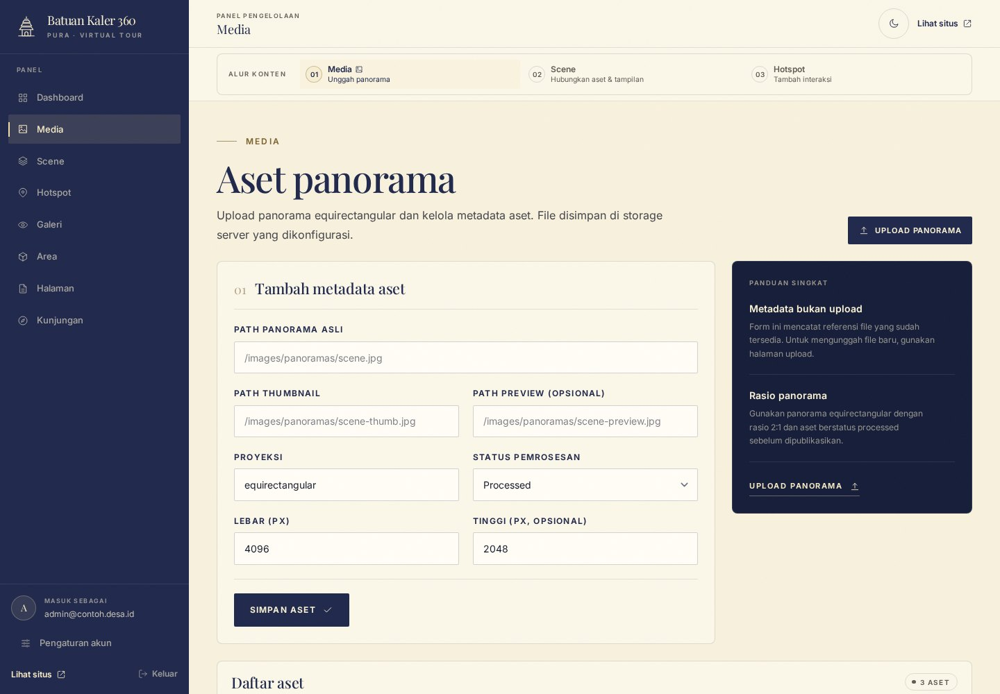
Pada halaman Detail aset, Anda dapat melihat panorama, mengganti thumbnail, dan membuat scene dengan aset tersebut. Thumbnail biasanya diambil dari pandangan awal scene, tetapi dapat diganti manual.
Form “Tambah metadata aset” adalah jalur lanjutan untuk aset yang sudah diproses di luar aplikasi. Isi path asli, path thumbnail, proyeksi, status pemrosesan, lebar, dan tinggi. Jangan gunakan form ini jika Anda tidak yakin dengan path file.
Aset yang masih dipakai scene atau halaman beranda tidak dapat dihapus. Pindahkan atau hapus referensinya terlebih dahulu. Penghapusan akan menghapus file dari storage.
| Gejala | Penyebab dan tindakan |
|---|---|
| “Ukuran file melebihi batas” | Kompres file atau gunakan WebP; batas original 50 MB. |
| “Rasio harus 2:1” | File bukan panorama equirectangular; periksa hasil kamera/proses stitching. |
| Upload berhenti di reverse proxy | Naikkan client_max_body_size dan BODY_SIZE_LIMIT. |
| Thumbnail tidak tampil | Periksa path thumbnail, permission volume, atau konfigurasi S3. |
| Aset processed tetapi scene gagal publish | Periksa file asli/thumbnail di storage dan kelengkapan terjemahan. |
Bagian 06
Scene adalah satu titik panorama yang dapat dibuka pengunjung. Scene menghubungkan aset panorama, area, pandangan awal, terjemahan, dan hotspot.
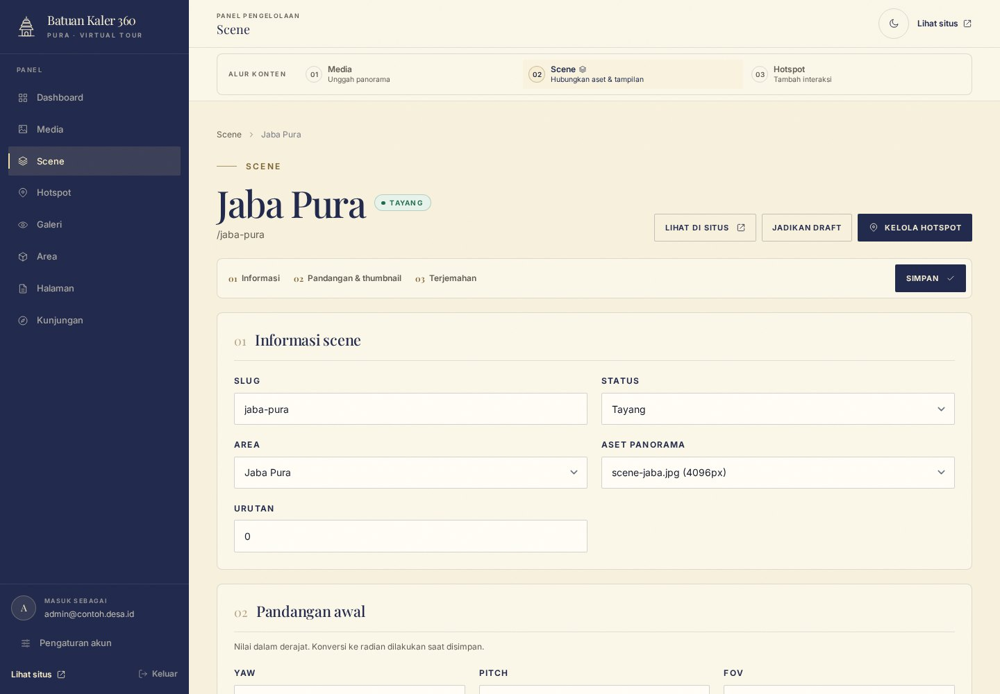
| Field | Fungsi |
|---|---|
| Slug | Alamat unik scene, mis. jaba-pura; dipakai pada URL tour. |
| Status | Draf atau Tayang. Draf tidak tampil di publik. |
| Area | Area tempat scene dikelompokkan; opsional. |
| Aset panorama | Aset yang menjadi sumber gambar scene. |
| Urutan | Urutan tampil di daftar scene; angka kecil lebih dahulu. |
| Yaw/Pitch/FOV | Pandangan awal panorama dalam derajat di UI, disimpan sebagai radian. |
| Judul/Deskripsi ID/EN | Konten yang dibaca pengunjung pada bahasa terkait. |
Gunakan tombol pilih arah dari panorama untuk mengambil Yaw dan Pitch langsung dari viewer. FOV mengatur lebar pandangan awal. Tombol Ambil thumbnail dari titik awal membuat thumbnail scene dari pandangan tersebut dan menyimpannya pada aset panorama.
Scene hanya dapat dipublikasikan jika:
processed;Gunakan tombol Publikasikan pada halaman edit scene. Untuk menarik konten, gunakan Jadikan draft. Scene tayang memiliki tautan Lihat di situs.
Scene yang masih menjadi target hotspot lain tidak dapat dihapus. Hapus atau ubah hotspot yang menunjuk ke scene tersebut terlebih dahulu. Konfirmasi penghapusan memakai dialog dan tidak dapat dibatalkan.
Bagian 07
Hotspot adalah titik interaktif pada panorama. Gunakan hotspot navigasi untuk berpindah scene dan hotspot informasi untuk menjelaskan area atau objek.
| Tipe | Fungsi |
|---|---|
| Navigasi | Berpindah ke scene tujuan. Wajib memiliki target scene. |
| Informasi | Membuka panel judul dan deskripsi area/objek. |
| External | Disimpan di admin, tetapi belum dirender oleh viewer publik saat ini. |
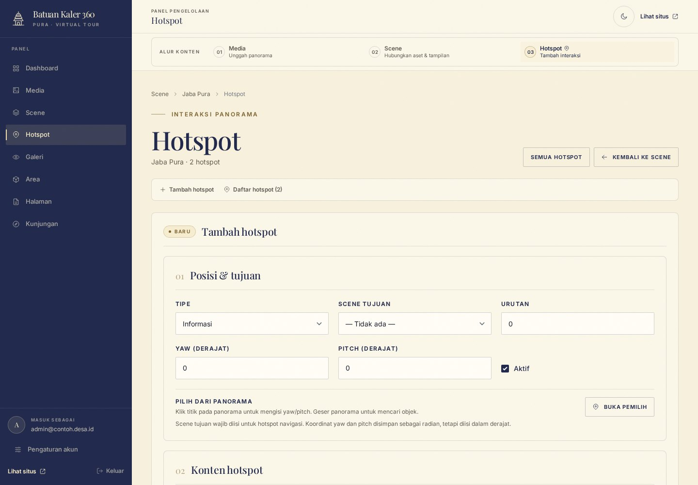
Yaw adalah arah horizontal dan Pitch adalah arah vertikal. UI menampilkan derajat; database menyimpan radian. Pitch dibatasi pada rentang yang aman. Gunakan pemilih koordinat agar hotspot tepat berada pada objek yang dimaksud.
Buka item hotspot pada daftar, ubah field, lalu klik Simpan hotspot. Hotspot nonaktif tetap tersimpan tetapi tidak ditampilkan di tour. Gunakan ini untuk menyiapkan hotspot sebelum waktunya.
Gunakan tombol Hapus hotspot dan konfirmasi. Hotspot yang dihapus tidak dapat dikembalikan; pastikan tidak ada scene lain yang masih membutuhkannya.
Bagian 08
Area mengelompokkan scene dan tampil sebagai halaman daftar serta detail di situs publik.
Buka Area untuk melihat daftar. Setiap area memiliki slug, status, urutan, judul, dan deskripsi ID/EN. Gunakan tombol Tambah area atau Edit.
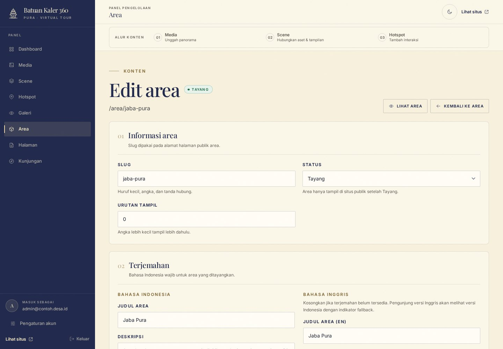
Area yang ditayangkan wajib memiliki judul dan deskripsi Indonesia. Terjemahan Inggris opsional; jika kosong, pengunjung EN melihat versi Indonesia dengan indikator fallback.
Scene memilih area pada form scene. Halaman detail area menampilkan scene published yang terhubung. Area yang masih digunakan scene tidak dapat dihapus; pindahkan scene ke area lain terlebih dahulu.
Bagian 09
Galeri menampilkan foto dokumentasi kawasan yang terpisah dari aset panorama.
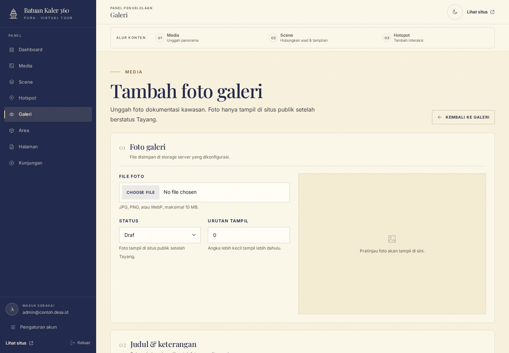
Foto hanya tampil di /galeri setelah status Tayang dan judul Indonesia
terisi. Foto dapat diklik untuk membuka ukuran penuh. Jika terjemahan Inggris kosong,
judul/keterangan Indonesia dipakai dengan indikator fallback.
Pada halaman edit, unggah file baru untuk mengganti foto. File lama akan dihapus setelah perubahan berhasil. Tombol Hapus foto menghapus data dan file dari storage secara permanen.
Bagian 10
Konten halaman dikelola dari menu Halaman dan Kunjungan. Gunakan status Draf untuk menyiapkan konten sebelum tayang.
Menu Halaman menampilkan Beranda, Sejarah, Panduan, Area, dan Galeri. Setiap item memiliki status dan tombol edit.
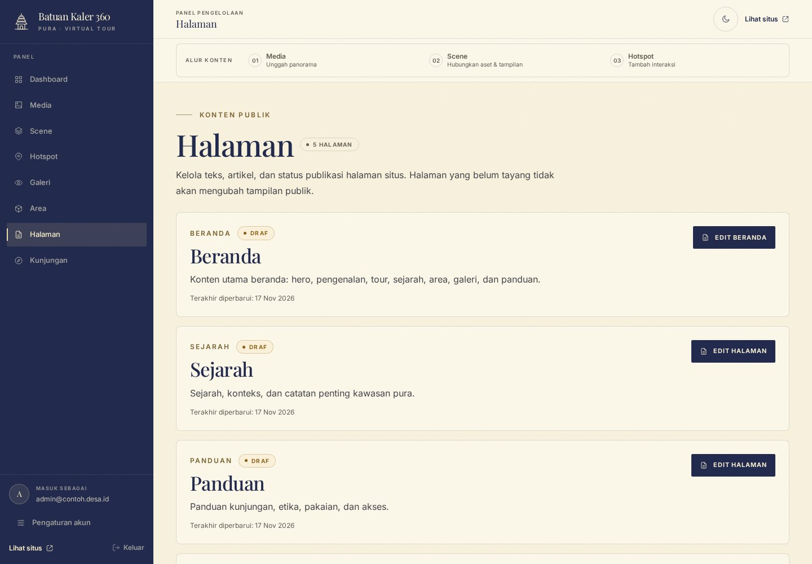
Editor Beranda mengelola teks hero, pengenalan, virtual tour, sejarah, area, galeri, panduan, serta gambar hero dan pratinjau tour. Pilih bahasa yang sedang diedit, isi field, lalu simpan. Status Draf tidak mengubah beranda publik.
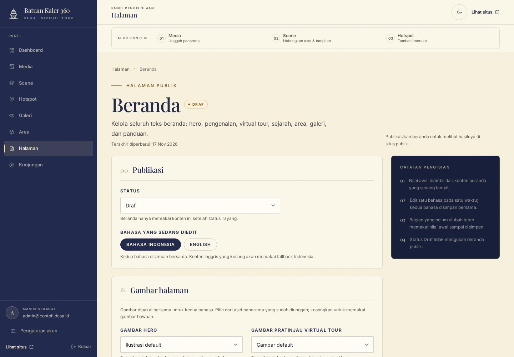
Halaman Sejarah dan Panduan menggunakan editor artikel: judul, deskripsi, catatan verifikasi, dan blok konten. Blok dapat berupa bagian, kutipan, atau sumber. Susun blok sesuai urutan baca.
Menu Kunjungan mengelola informasi praktis: pengelola, URL pengelola, URL peta, status, lokasi, jam kunjungan, akses, pakaian, ketentuan foto, etika, kontak, dan catatan verifikasi. Informasi ini tampil di beranda dan halaman Panduan setelah status Tayang.
Bagian 11
Halaman Pengaturan akun berada di bagian bawah sidebar. Di sini admin dapat mengubah nama, password, memeriksa storage, dan mengunduh backup database.
Isi nama administrator lalu klik Simpan nama. Untuk mengganti password, masukkan password saat ini, password baru minimal 12 karakter, dan konfirmasi. Setelah password diubah, sesi lain dikeluarkan.
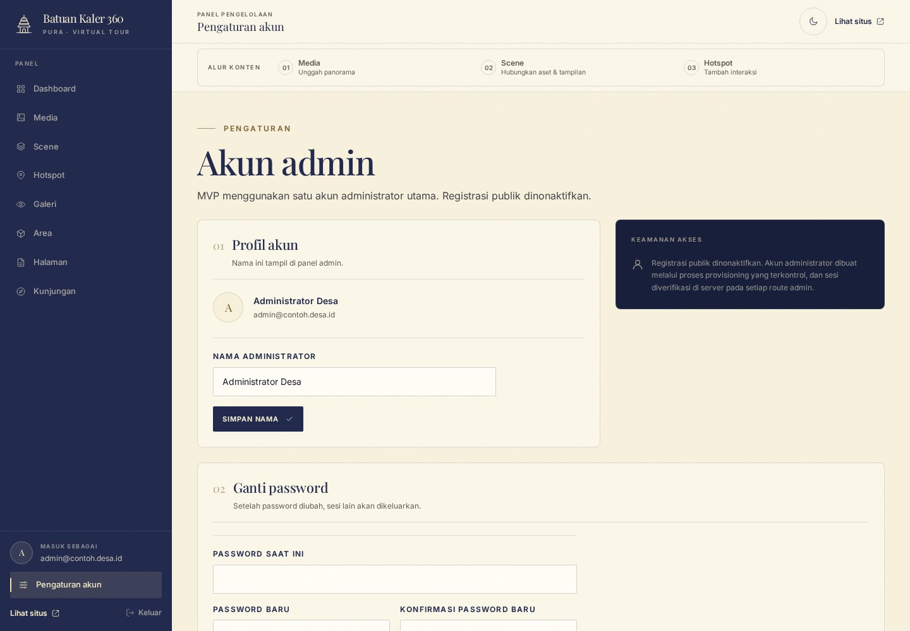
Kartu penyimpanan menampilkan driver aktif (lokal atau S3-compatible), status kelengkapan, bucket, dan URL publik. Tombol Uji koneksi penyimpanan membuat objek kecil, memeriksa keberadaan, lalu menghapusnya. Jika status belum lengkap, periksa environment dan redeploy.
Tombol Unduh backup database menghasilkan file .dump dari
PostgreSQL. File ini hanya berisi database. Untuk backup database + file upload,
gunakan skrip docker/backup.sh di server.
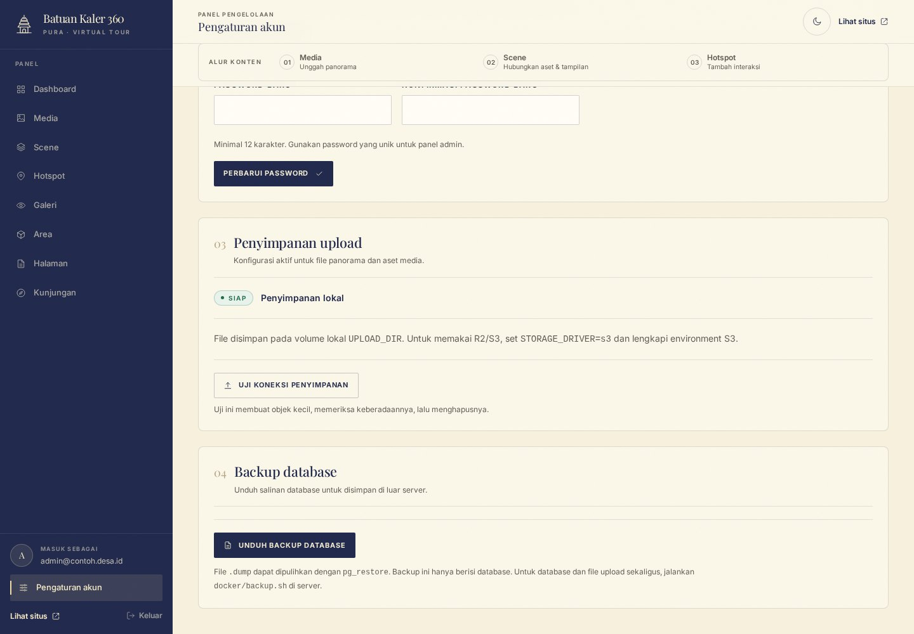
Bagian 12
Bagian ini untuk operator teknis. Admin konten tidak perlu memahami seluruh isi bagian ini, tetapi perlu tahu siapa yang harus dihubungi jika terjadi masalah server.
/app/uploads atau S3/R2
| Komponen | Versi / peran |
|---|---|
| SvelteKit | 3.x, SSR dan form actions, adapter-node. |
| Svelte | 5.x, runes mode. |
| TypeScript | 6.x, strict. |
| Vite | 8.x. |
| Tailwind CSS | 4.x, CSS-first, token di layout.css. |
| PostgreSQL | Database utama. |
| Drizzle ORM | Schema, query, dan migrasi. |
| Better Auth | Login, sesi, password, cookie. |
| Marzipano | Viewer panorama 360° di browser. |
| Zod | Validasi input server. |
| Docker | Build dan runtime produksi. |
| Playwright + Vitest | E2E dan unit/browser test. |
| Layer | Lokasi dan tanggung jawab |
|---|---|
| Route/HTTP | src/routes/** — membaca input, memanggil service, membentuk response. |
| Service | src/lib/server/services/** — aturan domain, transaksi, validasi publikasi. |
| Data access | src/lib/server/db/** — schema Drizzle dan koneksi. |
| Storage | src/lib/server/storage/** — upload, path, S3/local, hapus file. |
| Auth | src/lib/server/auth.ts, src/hooks.server.ts. |
| Schema validasi | src/lib/schemas/** — Zod dan tipe turunan. |
| Komponen | src/lib/components/** — UI publik, admin, tour. |
| Variable | Wajib | Keterangan |
|---|---|---|
DATABASE_URL | Ya | Connection string PostgreSQL. |
ORIGIN | Ya | URL publik, mis. https://domain-desa.id. |
BETTER_AUTH_SECRET | Ya | Secret sesi, minimal 32 karakter acak. |
UPLOAD_DIR | Ya* | Path volume upload lokal, mis. /app/uploads. |
STORAGE_DRIVER | Tidak | local atau s3. |
S3_* | Jika S3 | Endpoint, region, bucket, key, secret, public URL, path style. |
BODY_SIZE_LIMIT | Disarankan | 80M untuk upload panorama. |
RUN_MIGRATIONS | Tidak | Dokumentasi lama; entrypoint saat ini selalu menjalankan migrasi. |
SEED_ON_START | Tidak | false untuk produksi bersih. |
CREATE_ADMIN_ON_START | Tidak | true hanya saat provisioning admin pertama. |
ADMIN_EMAIL, ADMIN_PASSWORD | Provisioning | Hapus/rotate setelah admin dibuat. |
PROTOCOL_HEADER, HOST_HEADER | Reverse proxy | Mis. x-forwarded-proto, x-forwarded-host. |
Database memiliki tabel domain dan tabel autentikasi Better Auth. Tabel domain utama:
panorama_asset — metadata aset panorama.area, area_translation — area dan terjemahannya.scene, scene_translation — scene dan terjemahannya.hotspot, hotspot_translation — hotspot dan terjemahannya.gallery_item, gallery_item_translation — galeri.site_content, site_content_translation — informasi kunjungan.site_page, site_page_translation, site_page_block, site_page_block_translation — halaman CMS.
Tabel autentikasi: user, session, account, dan
verification. Semua ID domain memakai UUID. Relasi penting: scene →
panorama/area, hotspot → scene/target scene, dan semua terjemahan memakai locale ID/EN.
| Route | Fungsi |
|---|---|
/id, /en | Beranda publik. |
/[lang]/tour | Tour multi-scene. |
/[lang]/tour/[scene] | Deep link ke scene. |
/[lang]/area, /[lang]/area/[slug] | Daftar dan detail area. |
/[lang]/sejarah | Artikel sejarah. |
/[lang]/galeri | Galeri publik. |
/[lang]/panduan | Panduan + peta lokasi. |
/admin/login | Login admin. |
/admin/dashboard | Ringkasan admin. |
/admin/media, /admin/media/upload | Media panorama. |
/admin/scenes/** | Scene dan hotspot. |
/admin/areas | Area. |
/admin/gallery | Galeri. |
/admin/pages, /admin/home | Halaman dan beranda. |
/admin/content | Informasi kunjungan. |
/admin/settings | Akun, storage, backup. |
/uploads/** | Penyajian file upload lokal. |
/admin/** diperiksa sesi di server melalui hooks.
Driver local menyimpan file di UPLOAD_DIR dan menyajikannya
melalui /uploads/** dengan cache immutable. Driver s3 memakai
bucket S3-compatible; URL publik dan CORS bucket harus benar agar viewer dapat memuat
panorama.
Bagian 13
Aplikasi disediakan sebagai image Docker berbasis Node 24 dan PostgreSQL. Migrasi dijalankan otomatis saat container start.
/app/uploads.DATABASE_URL=postgres://user:password@db:5432/batuankaler_360 ORIGIN=https://domain-desa.id BETTER_AUTH_SECRET=<hasil openssl rand -base64 48> UPLOAD_DIR=/app/uploads STORAGE_DRIVER=local BODY_SIZE_LIMIT=80M SEED_ON_START=false CREATE_ADMIN_ON_START=true ADMIN_EMAIL=admin@domain-desa.id ADMIN_PASSWORD=<password kuat minimal 12 karakter> ADMIN_NAME=Administrator Desa
Setelah admin pertama dibuat, ubah CREATE_ADMIN_ON_START=false dan hapus
ADMIN_PASSWORD dari environment. Ganti seluruh secret dari nilai
development.
docker compose up -d --build docker compose logs -f app
Container menjalankan migrasi database sebelum aplikasi start. Jika database belum
siap, entrypoint mencoba ulang beberapa kali. Setelah berhasil, log menampilkan
Database migrations applied. dan Listening on ...:3000.
Reverse proxy harus meneruskan Host, X-Forwarded-Proto, dan
X-Forwarded-For. Set client_max_body_size 80m pada Nginx.
Tanpa konfigurasi ini, upload panorama besar dapat gagal di proxy meskipun aplikasi
sudah mengizinkan.
# backup database + uploads docker compose exec app sh /app/docker/backup.sh # restore docker compose exec app sh /app/docker/restore.sh \ /app/uploads/backups/database-<timestamp>.dump \ /app/uploads/backups/uploads-<timestamp>.tar.gz
Jalankan backup harian melalui cron, lalu salin hasilnya ke storage offsite. Uji restore ke database terpisah minimal dua kali setahun.
| Frekuensi | Pekerjaan |
|---|---|
| Harian | Cek uptime, cek backup, cek kapasitas disk. |
| Mingguan | Periksa log error dan ukuran upload/backup. |
| Bulanan | Cek masa berlaku SSL/domain, update ringan, cek akun admin. |
| 3 bulan | Update dependency keamanan dan uji fitur utama. |
| 6 bulan | Uji restore backup dan review kapasitas server. |
| Gejala | Penyebab / tindakan |
|---|---|
| 500 setelah deploy, log “relation ... does not exist” | Migrasi belum berjalan. Pastikan image terbaru dan entrypoint menjalankan docker/migrate.mjs. |
| Upload 413/putus | Naikkan body limit proxy dan BODY_SIZE_LIMIT; periksa ukuran/rasio file. |
| Login 429 | Rate limit. Tunggu satu menit sebelum mencoba lagi. |
| Login berhasil tetapi kembali ke login | ORIGIN tidak sesuai domain/HTTPS; periksa cookie dan header proxy. |
| Panorama kosong | Periksa file, path, CORS S3, WebGL, dan koneksi. |
| File upload 404 | Volume tidak ter-mount, permission, atau URL S3 salah. |
| Backup gagal | pg_dump tidak tersedia atau database tidak bisa diakses. |
| Sesi admin hilang setelah ganti domain | Normal; login ulang setelah ORIGIN diperbarui. |
Bagian 14
Serah terima bukan hanya memindahkan server. Pastikan desa memiliki akun, dokumen, akses, dan kemampuan operasional yang cukup.
BETTER_AUTH_SECRET dan password admin.Berita acara sebaiknya memuat:
Disarankan ada pendampingan 1–3 bulan untuk membantu admin desa membiasakan alur kerja. Setelah itu, tetapkan kontrak pemeliharaan ringan untuk update keamanan, monitoring, dan uji restore.
Lampiran
| Jenis | Batas |
|---|---|
| Panorama asli | 50 MB, JPG/PNG/WebP, 2:1, lebar minimal 2000 px. |
| Thumbnail panorama | 5 MB. |
| Preview panorama | 10 MB. |
| Foto galeri | 10 MB. |
| Body request aplikasi | 80M secara default. |
| Nama | Contoh / catatan |
|---|---|
DATABASE_URL | postgres://user:pass@db:5432/batuankaler_360 |
ORIGIN | https://domain-desa.id |
BETTER_AUTH_SECRET | Random 32+ karakter. |
UPLOAD_DIR | /app/uploads |
STORAGE_DRIVER | local atau s3 |
BODY_SIZE_LIMIT | 80M |
SEED_ON_START | false untuk produksi |
CREATE_ADMIN_ON_START | true hanya saat provisioning |
ORIGIN sama persis dengan URL publik.BETTER_AUTH_SECRET baru dan kuat./app/uploads persisten.| Istilah | Penjelasan |
|---|---|
| Admin | Pengguna yang mengelola konten melalui panel. |
| Aset | File dan metadata panorama atau galeri. |
| Draft | Status konten yang belum tampil publik. |
| Fallback | Penggunaan teks Indonesia saat teks Inggris kosong. |
| Hotspot | Titik interaktif pada panorama. |
| Locale | Kode bahasa: id atau en. |
| Migrasi | Perubahan struktur database yang dijalankan otomatis saat deploy. |
| Published | Status konten yang tayang di situs publik. |
| Scene | Satu titik panorama dalam tour. |
| Slug | Identifier URL yang unik. |
| Thumbnail | Gambar kecil untuk daftar scene/aset. |
| Yaw/Pitch | Arah pandangan horizontal/vertikal. |
| Peran | Kontak |
|---|---|
| Admin konten Desa | ________________________ |
| Operator teknis | ________________________ |
| Pengelola Pura | ________________________ |
| Darurat server | ________________________ |